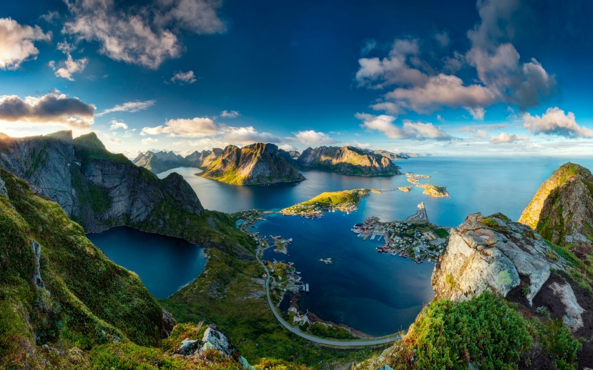

Побачити світ – мрія кожної людини. Скільки всього нового та прекрасного таїть у собі наша планета. Скільки у світі країн – стільки й незвіданих доріг та відкриттів.
Когось манить незаймана людиною природа, а хтось хоче побувати в галасливому мегаполісі з хмарочосами та мільйонами людей, комусь хочеться відкрити таємниці багатовікових замків та палаців, а хтось мріє про тепле сонце на морському узбережжі.
Кожна культура унікальна і таїть у собі звичаї та традиції, відкривши які ми зможемо ближче пізнати інших людей. І все це манить і зачаровує, приваблює нас. Р
озвинена система транспорту дозволяє долати величезні відстані за лічені години. Весь світ відкритий людині, і мандрівки перестали бути важкою справою для всіх нас.
Подорож – завжди щось нове та цікаве, це зустріч із новими людьми, містами та пам'ятками. Подорож завжди дарує нові емоції та враження, вона дозволяє відволіктися від повсякденного життя та поринути у нове інше життя, хоча б на кілька днів.

Найчастіше люди вирушають подорожувати під час відпустки.
Одні люди люблять теплі курорти, південні країни, вони насолоджуються видом моря, піску, черепашок і хвиль, ця група людей отримує задоволення від купання в морі, від теплого сонця і свіжого вітерцю, від морських екскурсій.
Інші мандрівники люблять відвідувати країни та міста, щоб познайомитись з новою культурою, побачити, як живуть інші люди, помилуватися відомими на весь світ пам'ятками культури. Треті надають перевагу екстремальним подорожам,
їм цікаво наживо побачити гори, піднятися на них або самостійно освоювати морське дно.
У всіх нас різні захоплення та уподобання, залежно від них ми вибираємо свій вид подорожі. Одне можна сказати точно, подорож – це завжди щось яскраве та незабутнє, це море усмішок та гарний настрій.